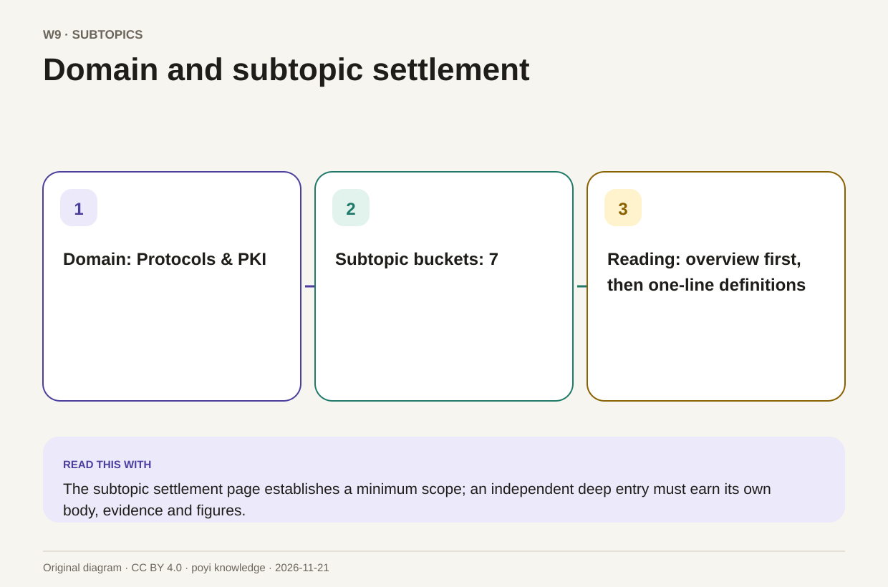
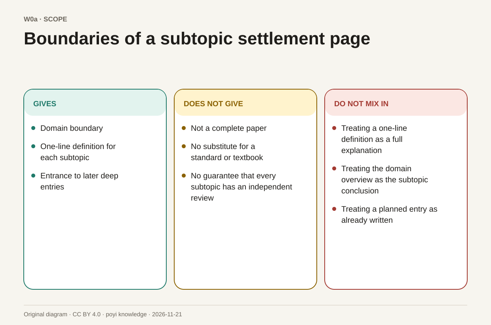

Principles
Domain: Protocols & PKI.
Security protocols arrange primitives into message flows among parties, using certificates, identities and freshness to resist replay and man-in-the-middle attacks. Protocol errors are often more damaging than primitive weaknesses.
This page settles the 7 subtopics in this domain that do not yet have their own article:
- cbor-cose (CBOR 与 COSE 编码): CBOR is a compact binary data model; COSE defines signature, encryption and MAC objects on top of it, common in IoT and FIDO.
- dilithium (Dilithium): Dilithium (ML-DSA) is a lattice-based signature standard with larger signatures and public keys but simple verification; it is part of the NIST post-quantum standards.
- dtls (DTLS 数据报传输安全): DTLS moves the TLS handshake and record layer onto UDP for datagram security in real-time media and IoT, and must handle loss and replay.
- HTTP CONNECT tunnelling (HTTP CONNECT 隧道): HTTP CONNECT lets a client establish an end-to-end tunnel through a proxy that forwards bytes; authentication and a target allow-list are its security boundary.
- media session security (媒体会话安全): Media session security concerns SRTP, DTLS-SRTP and key agreement, focusing on confidentiality, integrity and synchronisation of media streams.
- network-access-authentication (Network Access Authentication): Network access authentication (EAP/802.1X) checks identity and policy before a device joins the network; credential protection and tunnel method determine its real strength.
- tls (TLS 握手): The TLS handshake negotiates algorithms and keys, validates certificates and establishes record-layer keys; configuration, certificate validation and downgrade are main failure points.
Domain scale
This domain has 100 registered catalog entries across 11 period groups. Type distribution: algorithm 0，attack 1，theorem 0，protocol 38，standard 4，machine 0，person 0，event 6，term 47. This is a count of retrievable, reviewable catalog nodes, not of long-form completed articles; mechanism depth depends on each entry's own text and sources.

Why it matters
These subtopics are kept on one page so that the domain boundary and a minimal definition exist before deciding which ones need independent deep entries. It avoids empty placeholders and avoids mistaking “has a name” for “has been explained”.
Key disputes
- Definition boundary: a domain label is a finding aid, not one theory. Merging adjacent entries hides differences in assumptions, models and adversary capability.
- Security boundary: catalog registration is not implementation security; standard clauses, parameters and side-channel exposure must be checked separately.
- Historical narrative: commemorative accounts of people, institutions and events do not replace primary archives; dates and priority still need item-by-item checking.
Applications
Reading: start with the domain overview, then read the one-line definition of each subtopic. For formulas, parameters or attack reproductions, follow the entry the subtopic points to; where no independent entry exists, use this page's one-line definition as the minimum scope.
Representative route
- Automatic Certificate Management Environment (acme, level 2)
- ACME Renewal Information (acme-ari, level 3)
- Authentication Header (ah, level 3)
- CA/Browser Forum TLS Baseline Requirements (cabf-br, level 2)
- CA/Browser Forum Extended Validation Guidelines (cabf-ev, level 3)
- Concise Binary Object Representation (cbor, level 2)
- CBOR Object Signing and Encryption (cose, level 3)
- Certificate Revocation List (crl, level 2)
- NSEC3 (dnssec-nsec3, level 4)
- Downgrade Attack (downgrade-attack, level 3)
High-difficulty nodes (level 3–4): Late-Qing Telegraph Encryption (4); NSEC3 (4); SPAKE2+, an Augmented Password-Authenticated Key Exchange (PAKE) Protocol (4); A5/1 (3); ACME Renewal Information (3); Authentication Header (3); CA/Browser Forum Extended Validation Guidelines (3); CAPTCHA (3). Read the domain overview first, then follow "definition → representative construction → attack/boundary → standard/deployment".
Limits & attacks
Boundary: this is a domain-level subtopic settlement page, not a full paper for each subtopic. A one-line definition states only what it belongs to and what problem it addresses; it does not replace a standard, textbook or paper. If an independent entry is created later, it must earn its own bilingual body and evidence review.
Do not mix in
- Do not treat the domain page as a complete paper for every entry.
- Do not treat the number of catalog registrations as the number of verified conclusions.
- Do not treat commemorative narrative in historical entries as technical proof for the domain.

History
The subtopics span several periods; this page aggregates by domain and does not compress different eras into one timeline.
Development line (by registered period)
古代起源（2） → 破译者时代（1） → 第一次世界大战（1） → 冷战与信息论转折（2） → 公钥革命（2） → 标准化时代（15） → 网络与协议时代（51） → 量子转折（1） → 后量子时代（2） → 前沿（16） → 中国平行线（8）
This line aggregates catalog period tags only: it shows where the domain has registered nodes, not a linear technical evolution. Entries from different periods may coexist, regress or be reinterpreted.
References
- Catalog domain entry: Protocols & PKI (d14-protocols-pki).
- Britannica search entry for Protocols & PKI. https://www.britannica.com/search?query=Protocols%20%26%20PKI